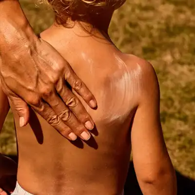
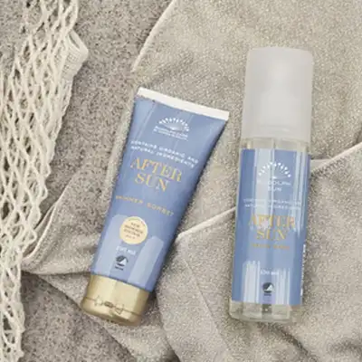

Care Journal
The Care Journal er til dig, der ønsker at finde en ny rutine, fordyb dig i interviews, bliv inspireret til et grønnere liv eller forelsk dig i en ingrediens.
Valget er dit.
Interview
Sund solfornuft med
Anette Kristine Poulsen
Lige her deler Anette Kristine Poulsen, skønhedsredaktør på Børsen og forfatter til bogen ’Seriøst bedre hud’, sine solråd og erfaringer med solskader.
Lære mere

Artikel
Smør børnene godt ind
Lige her giver vi dig tre tips til,
hvordan du kommer godt igennem den daglige solcreme-indsmøring af dine børn.
Lære mere
Artikel
Fire Solsikre Smøretips
Uanset, hvor gammel du er, skal du behandle din hud som et lille barns i solen. Gør dig umage og smør med kærlighed, så opnår du den bedste effekt. Indeni og udenpå.
Lære mere

Artikel
3 kærlige aftersun-råd
Afslut en varm sommerdag blødt og lækkert - og med masser af fugt og pleje. Klik her og find vores bedste aftersun-råd.
Lære mere
Artikel
Meget mere end SPF
Spørger du os, skal din solcreme være lige så nærende, som de produkter du ellers plejer din hud med. Det vil sige, at du i de solrige perioder kan udskifte dine vanlige plejeprodukter med solserien – passe på din hud og trygt færdes i solen. Læs mere her.
Lære mere
Artikel
Din forårsrutine
Foråret er her endelig, og det er tid til ændre din hudpleje en smule. Solen skinner, ansigtssolcreme er igen et must - og sammen med et fugtgivende serum og naturlig selvbruner har du lækker glød og velnæret hud i vente. Lige her fortæller vi dig, hvordan du kan bruge et fugtgivende serum, beskyttende Sun Face Cream og glødgivende A Hint of Summer sammen.
Lære mere